Dress up your guh: seven slots, more than a hundred pieces and the wardrobe. Eat a piece once and it is yours forever.
Kleed je guh aan: zeven vakjes, meer dan honderd kledingstukken en de kledingkast. Een kledingstuk eet je één keer op en dan is het voor altijd van jou.
Guh clothes and the wardrobeGuhkleertjes en de kledingkast
Dress up your tamed guh! A guh has seven clothing slots: head, eyes, body, neck, back, hair and ears. Clothes are unlocks: hold right-click on a piece for 1.5 seconds to use it up, and from then on all your tamed guhs can wear it (see ). Dress a guh in the wardrobe (Clothes, armour & backpack in the Guh menu), or right-click your guh with a piece you already unlocked. Suits cover the body but leave the paws free. These are the first 41 pieces: everyday clothes, work outfits, holiday outfits and fantasy outfits; there are 141 unlockable pieces now.
Kleed je tamme guh aan! Een guh heeft zeven kledingvakjes: hoofd, ogen, lijf, nek, rug, haar en oren. Zijn kleertjes ontgrendelingen: houd rechtsklik 1,5 seconde ingedrukt op een stuk om het op te maken, en vanaf dan kunnen al je tamme guhs het aan (zie ). Kleed een guh aan in de kledingkast (Kleding & rugzak in het guhmenu), of rechtsklik je guh met een stuk dat je al ontgrendeld hebt. Pakjes bedekken het lijf maar laten de pootjes vrij. Dit zijn de eerste 41 stuks: gewone kleertjes, werkkleding, feestdagkleding en fantasykleding; inmiddels zijn er 141 ontgrendelbare stukken.
- Where (since every piece has exactly one source; the Guhdex tab Kleding shows it): the Guh kleermaker in guh villages always sells his whole everyday set (and the oorstrikjes); the chef set is at Bakker Korstje, the straw hat and overalls at Boerin Hooibaal, the work outfits come from the four beroepen, the party hat from picnics, the heart glasses, monocle and royal crown from the Guhdex, the onesie from taming a Brococolief guh, and the backpack you craft. Holiday and fantasy pieces are found in chests: hamster houses (Sinterklaas, winter), picnics (Christmas, King's Day), Evil Mika homes (Halloween), caves (pirate, knight) and the guhramid (royal cape, wizard).Waar (sinds heeft elk stuk precies één bron; het Guhdex-tabblad Kleding laat hem zien): de guhkleermaker in guhdorpen verkoopt altijd zijn hele gewone setje (en de oorstrikjes); het koksetje is bij Bakker Korstje, de strohoed en tuinbroek bij Boerin Hooibaal, de werkkleding komt van de vier beroepen, het feesthoedje uit picknicks, de hartjesbril, het monocle en de koninklijke kroon van de Guhdex, de onesie van het temmen van een Brococolief-guh, en de rugzak maak je zelf. Feestdag- en fantasykleding vind je in kisten: hamsterhuizen (Sinterklaas, winter), picknicks (kerst, Koningsdag), Evil Mika-huizen (Halloween), grotten (piraat, ridder) en de guhramide (koningsmantel, tovenaar).
- Wild guhs wear clothes just for looks: Guhs never drop clothes.Wilde guhs dragen kleertjes gewoon omdat het leuk staat: Laten guhs nooit kleertjes vallen.
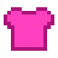
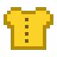
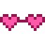
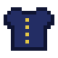
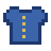
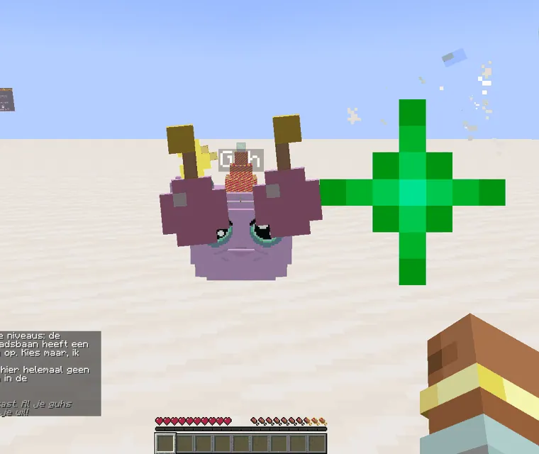
Eat it once, wear it foreverEén keer opeten, voor altijd aan
Clothes are still items (from shops, chests and trades), but now you hold right-click for 1.5 seconds to use one up, like eating: sparkles, a plop, confetti, and "Ontgrendeld: ... ! VAHOEG!". From then on the piece is yours for all your tamed guhs, even the same piece on many guhs at once. Unlocks are per player and stay when you die. Already have it? "Deze heb je al, njeg! Geef hem aan een vriend." and the item stays whole.
Kleertjes zijn nog steeds voorwerpen (uit winkeltjes, kisten en ruilen), maar nu houd je rechtsklik 1,5 seconde ingedrukt om er een op te maken, net als eten: fonkels, een plop, confetti, en "Ontgrendeld: ... ! VAHOEG!". Vanaf dan is het stuk van jou voor al je tamme guhs, zelfs hetzelfde stuk op heel veel guhs tegelijk. Ontgrendelingen zijn per speler en blijven als je doodgaat. Heb je hem al? "Deze heb je al, njeg! Geef hem aan een vriend." en het voorwerp blijft heel.
- Only the owner dresses a guh, with his own unlocks. A guh that gets a new owner keeps what it wears.Alleen de baas kleedt een guh aan, met zijn eigen ontgrendelingen. Een guh die een nieuwe baas krijgt houdt aan wat hij draagt.
- Guhs never drop clothes: wild guhs and the guhs in buildings still wear them, just for looks.Guhs laten nooit kleertjes vallen: wilde guhs en de guhs in gebouwen dragen ze nog wel, gewoon omdat het leuk staat.
- Hairstyles stay with Kapper Krulletje: they are not unlocks.Kapsels blijven bij Kapper Krulletje: dat zijn geen ontgrendelingen.
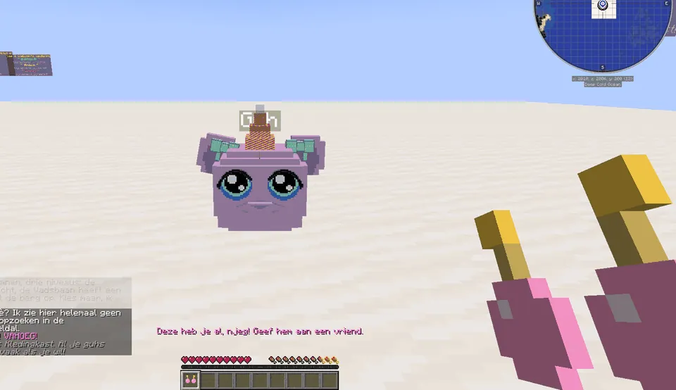
Deze heb je al, njeg!
The second time: the piece stays whole, so you can give it to a friend.
De tweede keer: het stuk blijft heel, dus je kunt het aan een vriend geven.
The wardrobeDe kledingkast
- A big 3D preview of your guh: drag or scroll to turn it. Everything you pick is tried on first; Aantrekken! makes it real, Terug undoes it.Een groot 3D-voorbeeld van je guh: sleep of scroll om hem te draaien. Alles wat je kiest past hij eerst; Aantrekken! maakt het echt, Terug zet het terug.
- Per slot a tab (with the piece that's tried on as its icon) and a scrolling list of your unlocks + Niets; the worn piece says draagt hij.Per vakje een tabblad (met het gepaste stuk als icoontje) en een scrollende lijst van je ontgrendelingen + Niets; wat hij draagt staat erbij als draagt hij.
- A search box, a filter per source, the Dobbel! button (a random outfit) and 5 favourite outfits (click = try on, shift-click = save).Een zoekvakje, een filter per bron, de knop Dobbel! (een willekeurige outfit) en 5 lievelingsoutfits (klik = passen, shift-klik = bewaren).
- The tab Rugzak & harnas: the armour slot and the 18 backpack slots (they belong to that guh). A backpack only comes off when it's empty.Het tabblad Rugzak & harnas: het pantservakje en de 18 rugzakvakjes (die horen bij die guh). Een rugzak gaat alleen af als hij leeg is.
Clothes are now unlocksKleertjes zijn nu ontgrendelingen
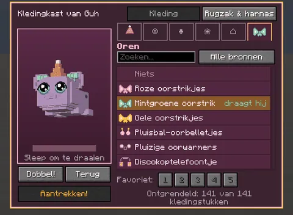
The ear slotHet oorvakje
Oorstrikjes, oorbelletjes, oorwarmers and the koptelefoontje.Oorstrikjes, oorbelletjes, oorwarmers en het koptelefoontje.
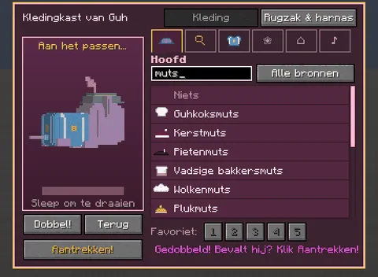
SearchZoeken
Type muts and see every hat you have.Typ muts en zie al je mutsen.
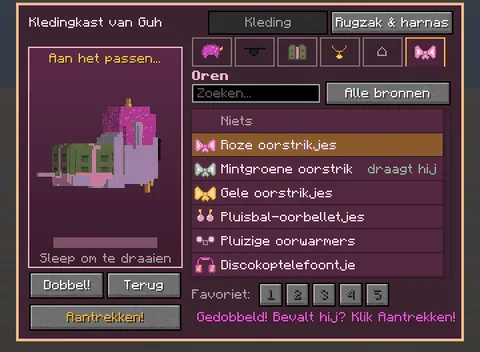
Dobbel!
Gedobbeld! Bevalt hij? Klik Aantrekken!Gedobbeld! Bevalt hij? Klik Aantrekken!
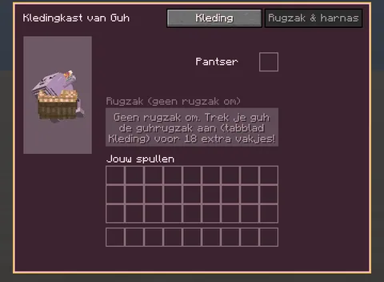
Rugzak & harnas
Armour and the backpack, with your own things below.Pantser en de rugzak, met je eigen spullen eronder.
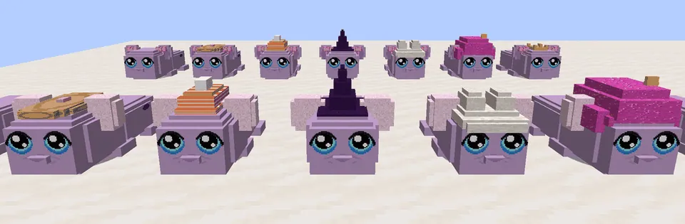
The slot: OrenHet vakje: Oren
Guhs now have a seventh clothing slot, for the ears (after the hair). Everything sits on the ears themselves, so it wiggles along and fits with every hat and hairstyle. The pieces:
Guhs hebben nu een zevende kledingvakje, voor de oren (na het haar). Alles zit op de oortjes zelf, dus het wiebelt mee en past bij elke hoed en elk kapsel. De stukken:
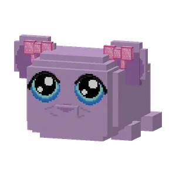
 Roze oorstrikjes
Roze oorstrikjes
the kleermakerde kleermaker
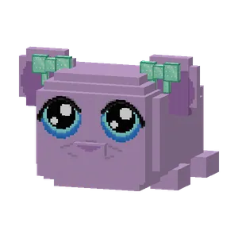
 Mintgroene oorstrikjes
Mintgroene oorstrikjes
the kleermakerde kleermaker
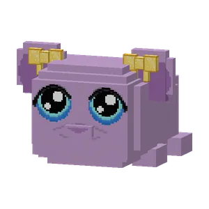
 Gele oorstrikjes
Gele oorstrikjes
the kleermakerde kleermaker
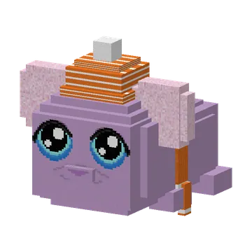
Every piece has exactly one sourceElk stuk komt van precies één plek
A minigame piece only comes from its own minigame, and every other piece has one logical home. The Guhdex tab Kleding tells you where each one comes from. What moved:
Een minigamestuk komt alleen van zijn eigen minigame, en elk ander stuk heeft één logische plek. Het Guhdex-tabblad Kleding vertelt je waar elk stuk vandaan komt. Wat er verhuisde:
| PieceStuk | Now fromNu van |
|---|---|
| Striped sweater, raincoat, rain hat, bow ties, sunglasses + the three oorstrikjesGestreepte trui, regenjas, zuidwester, strikjes, zonnebril + de drie oorstrikjes | the kleermaker (always his whole offer now)de kleermaker (nu altijd zijn hele aanbod) |
| Chef jacket and chef hatKoksbuis en koksmuts | Bakker Korstje in the Knuffeldal (bakmunten)Bakker Korstje in het Knuffeldal (bakmunten) |
| Straw hat and overallsStrohoed en tuinbroek | Boerin Hooibaal: after her 1st and 3rd daily choreBoerin Hooibaal: na haar 1e en 3e klusje |
| Firefighter, police, doctor and builder outfitsBrandweer-, politie-, dokters- en bouwpakje | the four beroepen (see below)de vier beroepen (zie hieronder) |
| Party hatFeesthoedje | guh picnic chests onlyalleen de kisten van de guhpicknick |
| Heart glasses, monocle, royal crownHartjesbril, monocle, koninklijke kroon | Guhdex milestones onlyalleen Guhdex-mijlpalen |
| Pink onesieRoze onesie | taming a Brococolief guh (once)een Brococolief-guh temmen (één keer) |
| Guh backpackGuhrugzak | crafting onlyalleen zelf maken |
| Koning setKoningspakje | the treasure chest of the guh castlede schatkist van het guhkasteel |
| Wolkenmuts and wolkenkraagWolkenmuts en wolkenkraag | a new chest on the Wolkje of the floating islandseen nieuwe kist op het Wolkje van de zwevende eilandjes |
| Knight helmet and armourRidderhelm en -harnas | cave and castle chestskisten in grotten en het kasteel |
| Grill koksmuts, boswachtershoed, plukmutsGrill-koksmuts, boswachtershoed, plukmuts | their shops onlyalleen hun winkeltjes |
The slotsDe vakjes
| SlotVak | PiecesStukken |
|---|---|
| BodyLijf | 49 |
| HeadHoofd | 58 |
| NeckNek | 26 |
| EyesOgen | 11 |
| BackRug | 8 |
| HairHaar | 8 |
| EarsOren | 9 |